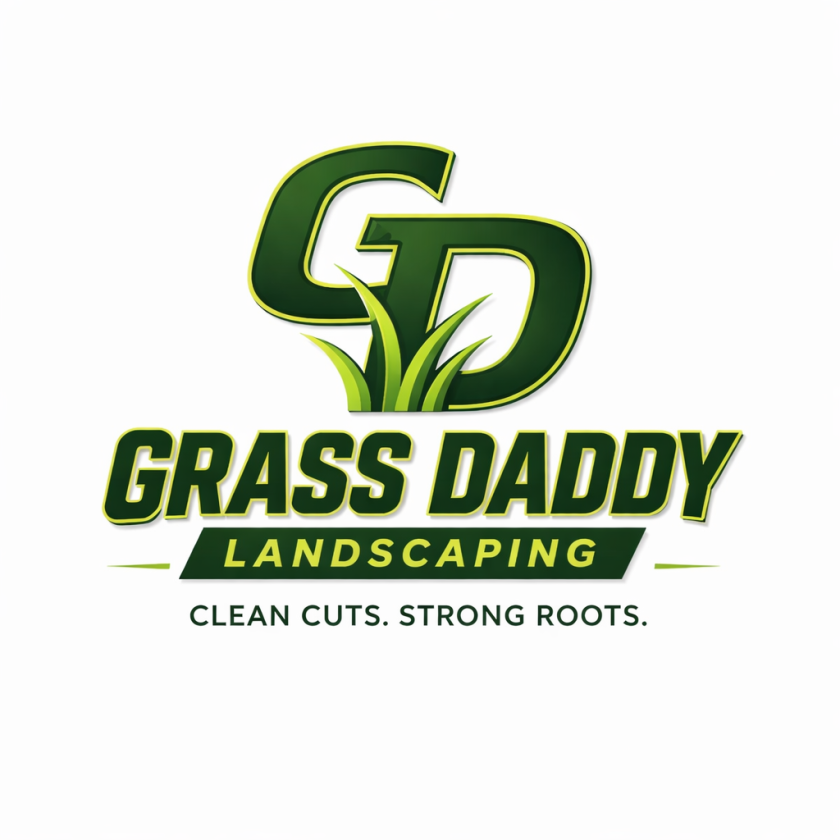
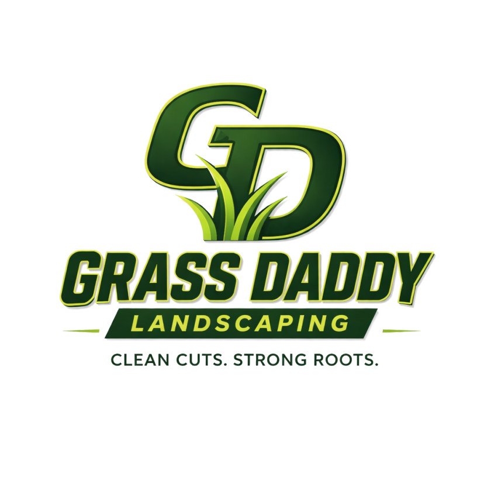

01
Mower Reveal
The mark gets "cut in" left to right, with a bright blade-line leading the wipe — like a first pass across an overgrown lawn.
Best for: hero intro, splash screen
02
Grow-In
Blades sprout first, then the mark pushes up out of the ground with a soft, springy overshoot — like it just grew there.
Best for: page load, app splash
03
Stamp Spin
Drops in on an angle and lands hard with a little rotational overshoot and an impact ring — confident, like a seal of approval.
Best for: badge/certification moments, intros

04
Stripe Sweep
Idle and still until touched — then a diagonal mower-stripe of light glides across the mark once. Hover to try it.
Best for: button/link hover, card hover states
05
Pulse Glow
A continuous, slow breathing glow behind the mark — ambient and alive, never distracting.
Best for: hero backdrop, waiting/idle states
06
Trim Line
Reveals top-to-bottom behind a hedge-trimmer shear line, with tiny clippings falling away as it passes.
Best for: section reveals, transitions between pages
07
Loader Loop
A compact spinner build — dashed ring orbits while the mark breathes gently in place. Reads clearly even small.
Best for: page/form loading spinner, favicon-scale use
08
Dock to Nav
Opens big and centered like a proper hero entrance, holds a beat, then shrinks and slides home into the nav corner — one continuous motion from "intro" to "in place."
Best for: first-visit homepage load